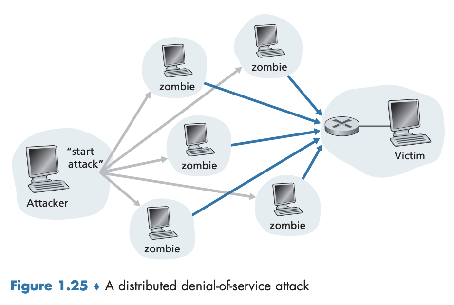

1.6 공격받는 네트워크
오늘날 인터넷은 많은 기관, 개인, 사물들에게 매우 중요하며 의존도도 높아지고 있다. 하지만 ’나쁜 친구들’이 연결된 컴퓨터에 해를 끼치거나, 사생활을 침해하거나, 인터넷 서비스를 동작하지 못하게 할 수 있다. 네트워크 보안 분야는 그러한 ’나쁜 친구들’이 어떻게 컴퓨터 네트워크를 공격할 수 있는지, 그로부터 어떻게 방어할 수 있는지, 공격에 영향을 받지 않는 새로운 구조 설계 등을 다루는 분야다. 여기서는 오늘날 널리 퍼진 보안 관련 문제를 조사하는 것으로 시작하며 다음 간단한 질문을 가지고 들어가보자.
- 무엇이 잘못될 것인가?
- 컴퓨터 네트워크가 어떻게 공격받기 쉬운가?
- 오늘날 좀 더 널리 퍼진 공격 유형은 무엇인가?
멀웨어(Malware, 악성코드)
- 일반적인 데이터가 아닌 ‘해로운’ 데이터
- 파일 삭제, 주민번호, 비밀번호, 키스트로크(keystroke) 또는 사적인 정보를 모으는 스파이웨어를 설치하여 ’나쁜 친구들’에게 다시 보낸다.
- 면역되지 않은 호스트는 그런 장치들로 구성된 네트워크(봇넷(botnet))에 등록될 수 있다.
- 나쁜 친구들은 목표로 하는 호스트에 대해 스팸 전자메일 분배 혹은 분산 Dos(denial of service) 공격을 위해 이 봇넷을 제어하고 이용한다.
- 자기복제(self-replicating) 를 한다.
- 한 호스트에 영향을 미치면, 그 호스트에서 인터넷을 통해 다른 호스트로의 엔트리를 갖는다. 빠르게 기하급수적으로 퍼질 수 있다.
DoS(Denial-of-Service) 공격
- 네트워크, 호스트 혹은 다른 인프라스트럭처의 요소들을 정상적인 사용자가 사용할 수 없게 하는 것
- 웹 서버, 전자메일 서버, DNS 서버, 기관 네트워크가 타겟이 된다.
- 디지털 공격 지도(Digital Attract Map) 사이트는 세계적으로 발생하는 주요 DoS 공격을 시각화해준다.
- 대부분의 인터넷 DoS 공격은 다음 세 가지 범주 중 하나에 속한다.
취약성 공격(vulnerability attack): 목표 호스트에서 수행되는 공격받기 쉬운 애플리케이션 혹은 운영체제에 교묘한 메시지를 보내는 것을 포함한다. 만약 올바른 순서의 패킷을 공격받기 쉬운 애플리케이션 혹은 운영체제에 보내면 그 서비스는 중단되거나 더 나쁘게는 호스트가 동작을 멈출 수 있다.대역폭 플러딩(bandwidth flooding): 목표 호스트로 수많은 패킷을 보낸다. 목표 호스트의 접속 링크가 동작하지 못하도록 많은 패킷을 보내서 정당한 패킷들이 그 서버에 도달하지 못하게 한다.- 1.4.2절의 지연과 손실 분석 논의를 기억해보면, 만약 서버가 $R$ bps의 접속 속도를 갖고 있다면 공격자는 피해를 주기 위해 대략적으로 $R$ bps의 속도로 트래픽을 전송하면 된다. $R$이 매우 크다면 단일 공격 소스로는 충분한 트래픽을 발생시킬 수 없으며, 모든 트래픽이 차단(block) 될 수 있다.
연결 플러딩(connection flooding): 목표 호스트에 반열림(half-open) 혹은 전열림(fully open)된 TCP 연결을 설정한다. 호스트는 가짜 연결을 처리하느라 바빠서 정상적인 연결을 받아들이는 것을 중단하게 한다.
분산 DoS(DDoS) 공격

- 그림 1.25처럼 공격자는 다중의 소스를 제어하고 각 소스는 목표에 트래픽을 보낸다.
- 모든 제어 소스에 걸친 통합 트래픽 속도가 서비스를 무능력하게 하기 위해서는 전송률이 약 $R$이어야 한다.
- DDoS 공격은 단일 호스트로부터의 DoS 공격보다도 발견하고 방어하기가 매우 어렵다.
패킷 스니퍼(Packet sniffer)
- 지나가는 모든 패킷의 사본을 기록하는 수동적인 수신자
- 비밀번호, 주민등록번호, 영업 비밀, 사적인 개인 메시지 등 민감한 정보를 포함할 수 있다.
- 유비쿼터스(ubiquitous) 같은 무선 접속 환경으로 올수록 주요한 보안 취약성이 늘어났다.
- 유선 환경(이더넷, LAN)에서도 배치될 수 있으며 라우터 또는 링크에 대한 접속 권한을 얻을 경우 여기에 스니퍼를 설치하여 패킷을 가로채 민감한 정보를 얻을 수도 있다.
- 와이어샤크가 대표적으로 패킷 스니퍼를 사용한다.
- 수동적이기 때문에(패킷 삽입을 하지 않음) 탐지하기가 어렵다. → 가장 좋은 방어는 암호화다.
IP 스푸핑(spoofing)
- 임의의 출발지 주소, 패킷 내용, 목적지 주소를 갖는 패킷에서 ’가짜 출발지 주소’를 가진 패킷을 가지고 인터넷으로 보내는 것. 한 사용자가 다른 사용자인 것처럼 행동하는 여러 가지 방법 중 하나
종단 인증(end-point authentication), 즉 메시지가 실제로 와야 할 곳으로부터 온 것인지 확신할 수 있는 방법이 필요하다.